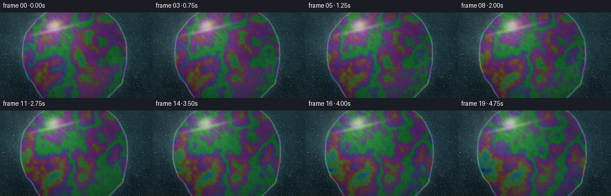
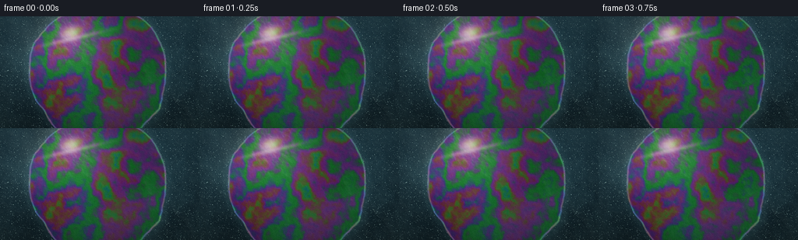
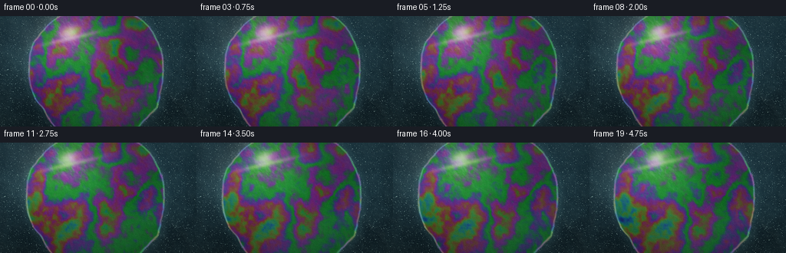
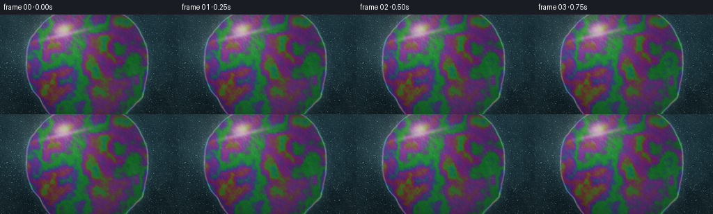

CODING AGENTS AS PIXEL WORLD MODELS
traex/DeepSeek-V4.1-Flash · phygen_085
点击播放 · 原生 RGB 像素
逐轮保存的候选
回放视频、检查图与代码变化。
每份候选均可单独播放。实际图片检查记录在下方工具轨迹中。
候选 01播放与检查图
点击播放 · 原生 RGB 像素


展开代码变化
--- 上一保存版本
+++ 本次保存版本
@@ -0,0 +1,311 @@
+from pathlib import Path
+import math
+
+import numpy as np
+from PIL import Image, ImageFilter
+
+import artifact_io
+
+
+CASE_DIR = Path(__file__).resolve().parent
+WIDTH = 256
+HEIGHT = 144
+FRAMES = 20
+FPS = 4.0
+SUPERSAMPLE = 3
+RW = WIDTH * SUPERSAMPLE
+RH = HEIGHT * SUPERSAMPLE
+ASPECT = WIDTH / HEIGHT
+
+
+def smoothstep(edge0, edge1, values):
+ t = np.clip((values - edge0) / (edge1 - edge0), 0.0, 1.0)
+ return t * t * (3.0 - 2.0 * t)
+
+
+def hash01(ix, iy, seed):
+ h = ix.astype(np.uint64) * np.uint64(374761393)
+ h += iy.astype(np.uint64) * np.uint64(668265263)
+ h += np.uint64((seed * 1442695041) & 0xFFFFFFFF)
+ h ^= h >> np.uint64(13)
+ h *= np.uint64(1274126177)
+ h ^= h >> np.uint64(16)
+ return (h & np.uint64(0xFFFFFFFF)).astype(np.float32) / 4294967295.0
+
+
+def value_noise(x, y, scale, seed):
+ px = x * scale
+ py = y * scale
+ ix = np.floor(px).astype(np.int64)
+ iy = np.floor(py).astype(np.int64)
+ fx = px - ix
+ fy = py - iy
+ ux = fx * fx * fx * (fx * (fx * 6.0 - 15.0) + 10.0)
+ uy = fy * fy * fy * (fy * (fy * 6.0 - 15.0) + 10.0)
+
+ a = hash01(ix, iy, seed)
+ b = hash01(ix + 1, iy, seed)
+ c = hash01(ix, iy + 1, seed)
+ d = hash01(ix + 1, iy + 1, seed)
+ lower = a + (b - a) * ux
+ upper = c + (d - c) * ux
+ return lower + (upper - lower) * uy
+
+
+def fbm(x, y, scale, seed, octaves=4, gain=0.5):
+ total = np.zeros_like(x, dtype=np.float32)
+ amplitude = 0.5
+ weight = 0.0
+ for octave in range(octaves):
+ total += amplitude * value_noise(x, y, scale * (2.0 ** octave), seed + octave * 19)
+ weight += amplitude
+ amplitude *= gain
+ return total / weight
+
+
+def interference_rgb(thickness, phase_offset=0.0):
+ wavelengths = np.array([650.0, 535.0, 455.0], dtype=np.float32)
+ phase = (4.0 * math.pi * 1.34 * thickness[..., None]) / wavelengths
+ waves = 0.5 + 0.5 * np.cos(phase + phase_offset)
+ return np.power(waves, 1.35).astype(np.float32)
+
+
+def gaussian_glow(x, y, cx, cy, sx, sy, angle=0.0):
+ ca = math.cos(angle)
+ sa = math.sin(angle)
+ dx = (x - cx) * ca + (y - cy) * sa
+ dy = -(x - cx) * sa + (y - cy) * ca
+ return np.exp(-((dx / sx) ** 2 + (dy / sy) ** 2))
+
+
+def blur_float(channel, radius):
+ kernel_radius = max(1, int(round(radius)))
+ padded = np.pad(channel, kernel_radius, mode="edge")
+ cumulative = np.cumsum(padded, axis=0, dtype=np.float32)
+ cumulative = np.vstack([np.zeros((1, padded.shape[1]), dtype=np.float32), cumulative])
+ blurred = (cumulative[2 * kernel_radius + 1 :] - cumulative[: -2 * kernel_radius - 1]) / (2 * kernel_radius + 1)
+ cumulative = np.cumsum(blurred, axis=1, dtype=np.float32)
+ cumulative = np.hstack([np.zeros((blurred.shape[0], 1), dtype=np.float32), cumulative])
+ return (cumulative[:, 2 * kernel_radius + 1 :] - cumulative[:, : -2 * kernel_radius - 1]) / (2 * kernel_radius + 1)
+
+
+def add_bubble(color, x, y, bx, by, radius, seed, foam=False):
+ margin = radius * 1.45
+ x0 = max(0, int((bx - margin / ASPECT) * RW) - 4)
+ x1 = min(RW, int((bx + margin / ASPECT) * RW) + 5)
+ y0 = max(0, int((by - margin) * RH) - 4)
+ y1 = min(RH, int((by + margin) * RH) + 5)
+ if x0 >= x1 or y0 >= y1:
+ return
+ if not np.isfinite([bx, by, radius]).all() or radius <= 0.0:
+ return
+
+ xs = x[x0:x1, y0:y1]
+ ys = y[x0:x1, y0:y1]
+ if xs.size == 0:
+ return
+ dx = (xs - bx) * ASPECT
+ dy = ys - by
+ distance = np.sqrt(dx * dx + dy * dy)
+ q = distance / radius
+ angle = np.arctan2(dy, dx)
+
+ inside = 1.0 - smoothstep(0.965, 1.015, q)
+ rim = np.exp(-((q - 0.93) / (0.045 if not foam else 0.075)) ** 2)
+ inner = np.exp(-((q - 0.73) / 0.10) ** 2)
+ rim_rainbow = interference_rgb(
+ 340.0 + 260.0 * q + 75.0 * np.sin(3.0 * angle + seed * 0.37)
+ )
+ top_left = np.exp(-((angle + 2.28) / 0.48) ** 2)
+ lower_right = np.exp(-((angle - 0.55) / 0.42) ** 2)
+ highlight = rim * top_left * (0.85 + 0.15 * inner)
+ shadow = rim * lower_right
+
+ if foam:
+ bubble_color = (
+ rim_rainbow * (0.22 + 0.42 * rim)[..., None]
+ + np.array([0.55, 0.68, 0.69], dtype=np.float32) * highlight[..., None]
+ + np.array([0.05, 0.10, 0.11], dtype=np.float32) * inner[..., None] * 0.25
+ )
+ alpha = inside * (0.18 + 0.54 * rim + 0.11 * inner)
+ alpha += highlight * 0.30
+ else:
+ bubble_color = (
+ rim_rainbow * (0.12 + 0.48 * rim)[..., None]
+ + np.array([0.78, 0.90, 0.88], dtype=np.float32) * highlight[..., None] * 0.62
+ - shadow[..., None] * np.array([0.02, 0.03, 0.03], dtype=np.float32)
+ )
+ alpha = inside * (0.035 + 0.43 * rim + 0.07 * inner)
+ alpha += highlight * 0.15
+
+ alpha = np.clip(alpha, 0.0, 0.86)[..., None]
+ crop = color[x0:x1, y0:y1]
+ color[x0:x1, y0:y1] = crop * (1.0 - alpha) + np.clip(bubble_color, 0.0, 1.0) * alpha
+
+
+def render_frame(frame_index):
+ t = frame_index / FPS
+ progress = frame_index / (FRAMES - 1)
+
+ sy, sx = np.mgrid[0:RH, 0:RW].astype(np.float32)
+ sx /= RW
+ sy /= RH
+
+ zoom = 1.035 + 0.045 * progress
+ camera_x = 0.015 + 0.010 * progress
+ camera_y = -0.003 - 0.006 * progress
+ x = (sx - 0.5) * ASPECT / zoom + 0.5 + camera_x
+ y = (sy - 0.5) / zoom + 0.5 + camera_y
+
+ broad = fbm(x, y, 2.5, 11, octaves=5)
+ medium = fbm(x + 0.025 * broad, y - 0.018 * broad, 8.0, 29, octaves=4)
+ fine = fbm(x - 0.008 * medium, y + 0.006 * medium, 32.0, 47, octaves=3)
+ micro = fbm(x, y, 110.0, 71, octaves=2)
+
+ surface_r = 0.010 + 0.025 * (1.0 - y) + 0.018 * broad + 0.006 * fine
+ surface_g = 0.032 + 0.060 * (1.0 - y) + 0.022 * broad + 0.010 * fine
+ surface_b = 0.044 + 0.082 * (1.0 - y) + 0.026 * broad + 0.013 * fine
+ color = np.stack([surface_r, surface_g, surface_b], axis=-1).astype(np.float32)
+
+ # A warm sky sheen makes the surrounding wet surface read as liquid, not stone.
+ sky = gaussian_glow(x, y, 0.18, 0.10, 0.55, 0.42, -0.20)
+ color += sky[..., None] * np.array([0.045, 0.064, 0.070], dtype=np.float32)
+
+ edge_noise = fbm(x, y, 3.6, 101, octaves=4)
+ radial = np.sqrt(((x - 0.505) / 0.61) ** 2 + ((y - 0.505) / 0.63) ** 2)
+ boundary = 0.965 + 0.115 * (edge_noise - 0.5)
+ film_mask = 1.0 - smoothstep(boundary - 0.025, boundary + 0.028, radial)
+ film_mask *= 0.93 + 0.07 * smoothstep(0.0, 0.15, broad)
+
+ # Slow drainage and shallow ripples move the interference bands without stirring the scene.
+ warped_x = x + 0.032 * (medium - 0.5) + 0.010 * np.sin(2.0 * math.pi * (y * 1.4 + 0.12 * t))
+ warped_y = y + 0.026 * (broad - 0.5) + 0.007 * np.cos(2.0 * math.pi * (x * 1.7 - 0.10 * t))
+ thickness = (
+ 255.0
+ + 520.0 * fbm(warped_x, warped_y, 3.2, 131, octaves=5)
+ + 150.0 * fbm(warped_x, warped_y, 12.0, 149, octaves=3)
+ + 42.0 * np.sin(2.0 * math.pi * (warped_x * 2.1 + warped_y * 1.25) - 0.65 * t)
+ + 16.0 * t
+ )
+ iri = interference_rgb(thickness, 0.15 + 0.05 * np.sin(0.45 * t))
+
+ view_light = 0.42 + 0.58 * gaussian_glow(x, y, 0.20, 0.17, 0.55, 0.50, -0.28)
+ film_color = iri * (0.095 + 0.34 * view_light[..., None])
+ film_color += np.array([0.018, 0.032, 0.038], dtype=np.float32)
+ color = color * (1.0 - 0.76 * film_mask[..., None]) + film_color * (0.76 * film_mask[..., None])
+
+ # Thickness gradients act as a soap-film lens and create soft caustic ribbons.
+ height = 0.55 * broad + 0.26 * medium + 0.08 * fine
+ gy, gx = np.gradient(height)
+ lap = np.gradient(gx, axis=1) + np.gradient(gy, axis=0)
+ caustic = np.exp(-((lap + 0.0008) / 0.012) ** 2)
+ caustic *= 0.35 + 0.65 * smoothstep(0.25, 0.75, broad)
+ color += caustic[..., None] * np.array([0.040, 0.073, 0.075], dtype=np.float32)
+
+ # The soap meniscus is a fine, iridescent boundary between film and wet surface.
+ edge_line = np.exp(-((radial - boundary) / 0.012) ** 2)
+ edge_halo = np.exp(-((radial - boundary - 0.035) / 0.045) ** 2)
+ edge_tint = interference_rgb(thickness + 120.0 + 90.0 * np.sin(5.0 * np.arctan2(y - 0.5, x - 0.5)))
+ color += edge_line[..., None] * (edge_tint * 0.17 + np.array([0.10, 0.15, 0.15], dtype=np.float32))
+ color += edge_halo[..., None] * np.array([0.018, 0.032, 0.033], dtype=np.float32)
+
+ large_bubbles = [
+ (0.705, 0.285, 0.072, 1.0),
+ (0.820, 0.590, 0.050, 2.0),
+ (0.605, 0.735, 0.061, 3.0),
+ (0.355, 0.235, 0.033, 4.0),
+ (0.165, 0.445, 0.042, 5.0),
+ (0.470, 0.465, 0.024, 6.0),
+ ]
+ for bx, by, radius, seed in large_bubbles:
+ shimmer = 1.0 + 0.018 * math.sin(0.9 * t + seed)
+ add_bubble(color, x, y, bx, by, radius * shimmer, seed)
+
+ # A compact foam patch anchors the detergent layer at the lower left.
+ rng = np.random.default_rng(85)
+ foam_count = 44
+ for index in range(foam_count):
+ angle = rng.normal(0.0, 0.75)
+ spread = 0.035 + 0.105 * math.sqrt(rng.random())
+ bx = 0.145 + 0.105 * spread * math.cos(angle) + 0.035 * rng.normal()
+ by = 0.805 + 0.085 * spread * math.sin(angle) + 0.025 * rng.normal()
+ radius = 0.004 + 0.010 * (rng.random() ** 1.7)
+ add_bubble(color, x, y, bx, by, radius, 20 + index, foam=True)
+
+ # A second, much sparser line of bubbles follows the film boundary on the right.
+ for index in range(13):
+ bx = 0.855 + 0.028 * math.sin(index * 1.7)
+ by = 0.685 + index * 0.018 + 0.006 * math.sin(index * 2.3)
+ add_bubble(color, x, y, bx, by, 0.005 + 0.003 * ((index * 7) % 5) / 4.0, 90 + index, foam=True)
+
+ # Warm reflected sunlight, with a narrow hot streak and a broad atmospheric bloom.
+ sun_wide = gaussian_glow(x, y, 0.235, 0.175, 0.28, 0.22, -0.22)
+ sun_core = gaussian_glow(x, y, 0.265, 0.158, 0.070, 0.047, -0.34)
+ sun_streak = gaussian_glow(x, y, 0.285, 0.205, 0.23, 0.018, -0.23)
+ warm = np.array([1.00, 0.79, 0.50], dtype=np.float32)
+ color += sun_wide[..., None] * warm * 0.11
+ color += sun_streak[..., None] * np.array([1.0, 0.89, 0.65], dtype=np.float32) * 0.30
+ color += sun_core[..., None] * np.array([1.0, 0.95, 0.78], dtype=np.float32) * 0.66
+
+ # Thin-film specular from the same sun direction.
+ light_x = -0.42
+ light_y = 0.38
+ light_z = 0.82
+ nx = -gx * 8.0
+ ny = -gy * 8.0
+ nz = np.ones_like(nx)
+ norm = np.sqrt(nx * nx + ny * ny + nz * nz)
+ nx /= norm
+ ny /= norm
+ nz /= norm
+ half_x = light_x
+ half_y = light_y
+ half_z = light_z + 1.0
+ half_norm = math.sqrt(half_x * half_x + half_y * half_y + half_z * half_z)
+ spec = np.clip((nx * half_x + ny * half_y + nz * half_z) / half_norm, 0.0, 1.0)
+ spec = np.power(spec, 48.0)
+ color += spec[..., None] * np.array([0.58, 0.67, 0.62], dtype=np.float32) * (0.20 + 0.80 * sun_wide[..., None])
+
+ # Tiny dry-side sparkles and microfoam break up otherwise smooth areas.
+ sparkle_noise = value_noise(x, y, 180.0, 201)
+ sparkle_mask = smoothstep(0.865, 0.925, sparkle_noise) * (1.0 - film_mask)
+ color += sparkle_mask[..., None] * np.array([0.23, 0.29, 0.27], dtype=np.float32)
+
+ # Gentle haze and soft bloom around the sun.
+ bloom_source = np.maximum(color - 0.38, 0.0)
+ bloom = np.stack(
+ [blur_float(bloom_source[..., channel], 9.0) for channel in range(3)],
+ axis=-1,
+ )
+ color += bloom * 0.28
+
+ color *= 1.32
+ color = 1.0 - np.exp(-np.maximum(color, 0.0))
+ color = np.power(np.clip(color, 0.0, 1.0), 1.0 / 1.12)
+
+ luminance = np.sum(color * np.array([0.299, 0.587, 0.114], dtype=np.float32), axis=-1, keepdims=True)
+ color = luminance + 1.11 * (color - luminance)
+ color = np.clip(color, 0.0, 1.0)
+
+ # Optical vignette and a trace of sensor grain at the final resolution.
+ vignette = 1.0 - 0.20 * (((sx - 0.5) * 1.6) ** 2 + ((sy - 0.5) * 1.9) ** 2)
+ color *= np.clip(vignette, 0.70, 1.0)[..., None]
+
+ image = Image.fromarray(np.clip(color * 255.0 + 0.5, 0.0, 255.0).astype(np.uint8), mode="RGB")
+ image = image.resize((WIDTH, HEIGHT), Image.Resampling.LANCZOS)
+ image = image.filter(ImageFilter.UnsharpMask(radius=0.75, percent=65, threshold=2))
+ final = np.asarray(image, dtype=np.float32)
+ grain_rng = np.random.default_rng(4000 + frame_index)
+ grain = grain_rng.normal(0.0, 1.15, size=(HEIGHT, WIDTH, 1))
+ final = np.clip(final + grain, 0.0, 255.0)
+ return final.astype(np.uint8)
+
+
+def main():
+ frames = np.stack([render_frame(index) for index in range(FRAMES)], axis=0)
+ artifact_io.save(frames, CASE_DIR)
+ print(f"wrote {FRAMES} frames to {CASE_DIR}")
+
+
+if __name__ == "__main__":
+ main()
候选 02播放与检查图
点击播放 · 原生 RGB 像素


展开代码变化
--- 上一保存版本
+++ 本次保存版本
@@ -190,9 +190,9 @@
iri = interference_rgb(thickness, 0.15 + 0.05 * np.sin(0.45 * t))
view_light = 0.42 + 0.58 * gaussian_glow(x, y, 0.20, 0.17, 0.55, 0.50, -0.28)
- film_color = iri * (0.095 + 0.34 * view_light[..., None])
- film_color += np.array([0.018, 0.032, 0.038], dtype=np.float32)
- color = color * (1.0 - 0.76 * film_mask[..., None]) + film_color * (0.76 * film_mask[..., None])
+ film_color = iri * (0.11 + 0.39 * view_light[..., None])
+ film_color += np.array([0.022, 0.037, 0.041], dtype=np.float32)
+ color = color * (1.0 - 0.79 * film_mask[..., None]) + film_color * (0.79 * film_mask[..., None])
# Thickness gradients act as a soap-film lens and create soft caustic ribbons.
height = 0.55 * broad + 0.26 * medium + 0.08 * fine
@@ -206,7 +206,7 @@
edge_line = np.exp(-((radial - boundary) / 0.012) ** 2)
edge_halo = np.exp(-((radial - boundary - 0.035) / 0.045) ** 2)
edge_tint = interference_rgb(thickness + 120.0 + 90.0 * np.sin(5.0 * np.arctan2(y - 0.5, x - 0.5)))
- color += edge_line[..., None] * (edge_tint * 0.17 + np.array([0.10, 0.15, 0.15], dtype=np.float32))
+ color += edge_line[..., None] * (edge_tint * 0.21 + np.array([0.12, 0.17, 0.16], dtype=np.float32))
color += edge_halo[..., None] * np.array([0.018, 0.032, 0.033], dtype=np.float32)
large_bubbles = [
@@ -220,6 +220,11 @@
for bx, by, radius, seed in large_bubbles:
shimmer = 1.0 + 0.018 * math.sin(0.9 * t + seed)
add_bubble(color, x, y, bx, by, radius * shimmer, seed)
+ # A fine reflected-light crescent gives the transparent bubbles a readable silhouette.
+ ring = gaussian_glow(x, y, bx, by, radius * 0.88 / ASPECT, radius * 0.88, 0.0)
+ crescent = gaussian_glow(x, y, bx - radius * 0.26 / ASPECT, by - radius * 0.30, radius * 0.50 / ASPECT, radius * 0.54, -0.52)
+ ring_edge = np.exp(-((np.sqrt(((x - bx) * ASPECT) ** 2 + (y - by) ** 2) / radius - 0.89) / 0.026) ** 2)
+ color += (ring_edge * crescent * 0.055)[..., None] * np.array([0.72, 0.86, 0.83], dtype=np.float32)
# A compact foam patch anchors the detergent layer at the lower left.
rng = np.random.default_rng(85)
可观测工具轨迹
实际执行的命令与返回图片。
命令 1exit 0
/bin/bash -c "pwd && rg --files -g 'prompt.txt' -g 'GENERATION_RULES.md' -g 'task_spec.json' -g '"'!node_modules'"' -g '"'!vendor'"'"
命令 2exit 0
/bin/bash -c 'ls -la'
命令 3exit 0
/bin/bash -c 'cat prompt.txt'
命令 4exit 0
/bin/bash -c 'cat GENERATION_RULES.md'
命令 5exit 0
/bin/bash -c 'cat task_spec.json'
命令 6exit 0
/bin/bash -c "sed -n '1,240p' artifact_io.py && printf '\\n---PLAYER---\\n' && sed -n '1,240p' player_template.html"
命令 7exit 0
/bin/bash -c "python - <<'PY'
import sys, numpy, PIL
print(sys.version)
print('numpy', numpy.__version__, 'PIL', PIL.__version__)
PY"命令 8exit 0
/bin/bash -c "find . -maxdepth 2 -type f -printf '%p %s bytes\\n' | sort"
命令 9exit 0
/bin/bash -c 'command -v chafa || true; command -v viu || true; command -v ffmpeg || true'
命令 10exit 0
/bin/bash -c 'find /usr/share/fonts -type f | head -20'
命令 11exit 0
/bin/bash -c "python - <<'PY' import scipy print(scipy.__version__) PY"
命令 12exit 0
/bin/bash -c 'command -v img2txt || true; command -v jp2 || true; command -v viu || true; command -v timg || true; command -v python3'
命令 13exit 0
/bin/bash -c "python - <<'PY' from PIL import Image print(Image.Image.resize.__doc__) PY"
命令 14exit 0
/bin/bash -c "python - <<'PY' from PIL import Image import numpy as np a=np.random.randn(4,5).astype(np.float32) try: im=Image.fromarray(a, mode='F') print(im.mode, im.size, np.asarray(im.resize((10,8), Image.Resampling.BICUBIC)).dtype) except Exception as e: print(type(e), e) PY"
命令 15exit 1
/bin/bash -c 'time python generate.py'
命令 16exit 1
/bin/bash -c 'time python generate.py'
命令 17exit 0
/bin/bash -c "nl -ba generate.py | sed -n '108,158p'"
命令 18exit 1
/bin/bash -c 'time python generate.py'
命令 19exit 1
/bin/bash -c 'time python generate.py'
命令 20exit 0
/bin/bash -c 'time python generate.py'
命令 21exit 0
/bin/bash -c "python - <<'PY'
from PIL import Image
import numpy as np
im=np.asarray(Image.open('inspection.png').convert('RGB'))
print('inspection', im.shape, 'mean', im.mean(axis=(0,1)).round(1), 'min/max', im.min(), im.max())
for f in [0,4,9,14,19]:
a=np.asarray(Image.open(f'frames/{f:02d}.png').convert('RGB')).astype(float)
print(f, 'mean', a.mean((0,1)).round(1), 'std', a.std((0,1)).round(1), 'p1/p50/p99', np.percentile(a,[1,50,99]).round(1))
PY"命令 22exit 0
/bin/bash -c "python - <<'PY'
from PIL import Image
import numpy as np, colorsys
im=np.asarray(Image.open('frames/00.png').convert('RGB')).astype(float)/255
# downsample via PIL
im=np.asarray(Image.fromarray((im*255).astype('uint8')).resize((64,28), Image.Resampling.BOX)).astype(float)/255
chars=' .:-=+*#%@'
for row in im:
out=''
for r,g,b in row:
v=max(r,g,b); mx=v; mn=min(r,g,b); s=0 if mx==0 else (mx-mn)/mx
if s<0.10: c=chars[min(9,int(v*9.99))]
else:
h,_,_=colorsys.rgb_to_hsv(r,g,b)
if h<.055 or h>=.93: c='R' if v>.35 else 'r'
elif h<.14: c='O' if v>.35 else 'o'
elif h<.24: c='Y' if v>.35 else 'y'
elif h<.43: c='G' if v>.35 else 'g'
elif h<.55: c='C' if v>.35 else 'c'
elif h<.72: c='B' if v>.35 else 'b'
elif h<.85: c='P' if v>.35 else 'p'
else: c='M' if v>.35 else 'm'
out+=c
print(out)
PY"命令 23exit 0
/bin/bash -c "python - <<'PY'
from PIL import Image
import numpy as np
from pathlib import Path
files=sorted(Path('frames').glob('*.png'))
ims=[Image.open(f).convert('RGB').resize((128,72),Image.Resampling.NEAREST) for f in files]
for name,ids in [('contact.png',[0,5,10,15,19]),('detail.png',[0,19])]:
w,h=ims[0].size
sheet=Image.new('RGB',(w*len(ids),h),(0,0,0))
for j,i in enumerate(ids): sheet.paste(ims[i],(j*w,0))
sheet.save(name)
# stats around sun and whole center
for f in [0,19]:
a=np.asarray(Image.open(f'frames/{f:02d}.png')).astype(float)
print('frame',f,'sun center',a[18:30,55:80].mean((0,1)).round(1),'film center',a[55:95,90:190].mean((0,1)).round(1))
PY"命令 24exit 0
/bin/bash -c 'python generate.py'
命令 25exit 0
/bin/bash -c "python - <<'PY'
from PIL import Image
import numpy as np
from pathlib import Path
try:
import cv2; print('cv2',cv2.__version__)
except Exception as e: print('no cv2',e)
for i in [0,5,10,15,19]:
a=np.asarray(Image.open(f'frames/{i:02d}.png')).astype(np.float32)
print(i,'mean',a.mean((0,1)).round(1),'std',a.std((0,1)).round(1),'satmean',(a.max(2)-a.min(2)).mean().round(1))
a=np.asarray(Image.open('frames/00.png')).astype(np.int16)
b=np.asarray(Image.open('frames/19.png')).astype(np.int16)
d=np.abs(a-b)
print('diff mean/max',d.mean().round(2),d.max(),'pct>8',(d.max(2)>8).mean().round(3),'pct>24',(d.max(2)>24).mean().round(3))
PY"保存候选 2 份；完成命令 25 次；可验证图片返回 0 张。原始 API 响应与完整日志保留在本地。